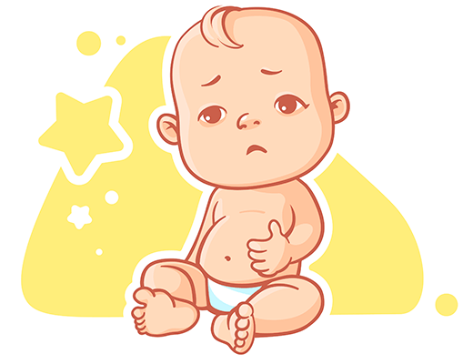

Долгожданная встреча произошла, и малыш появился на свет! В первые четыре недели жизни малыш считается новорожденным. В это время кроха ест и спит. Он пока не может делать что-то самостоятельно и каждую минуту нуждается в маминой помощи.
Новорожденный малыш чаще принимает позы, которые были для него привычны еще до рождения, в мамином животе. Лицо в первые дни пока отечное и немного одутловатое. Подкожного жира практически нет.
Мышцы малыша только начинают укрепляться. Пока он не может самостоятельно держать голову. Чтобы помочь освоить этот важный навык, после заживления пупочной ранки следует как можно чаще выкладывать ребенка на живот. Обычно это происходит к концу второй недели.
Новорожденный пока не может произносить членораздельные звуки. Свои эмоции он может выразить только плачем. Со временем родители начнут узнавать, что именно нужно крохе по интонации и продолжительности издаваемых звуков и выражению лица.
Существует несколько состояний психики, которые присущи новорожденным:
Новорожденный может спать до 18 часов в сутки. В это время еще нет режима сна и бодрствования. Родителям следует запастись терпением и постараться подстраивать дела с учетом поведения крохи.
Часто ребенок просыпается ночью. Если малыш на естественном вскармливании, отличным решением для более качественного отдыха всей семьи будет прикладывание к груди по первому требованию. А вот совместный сон лучше начинать в более позднем возрасте, когда кроха окрепнет.
 Основную часть времени малыш будет проводить лежа в кроватке или на
руках у родителей. Ему важно постоянно ощущать
мамино присутствие, слышать ее голос.
Основную часть времени малыш будет проводить лежа в кроватке или на
руках у родителей. Ему важно постоянно ощущать
мамино присутствие, слышать ее голос.
В этот период зрение ребенка развито очень слабо. Большинство картинок для него выглядит как в тумане. Рассматривать предметы лучше всего с расстояния 20-25 см. Громких звуков новорожденные не боятся, поскольку слух пока еще плохо развит.
Маленький желудок малыша пока не может принимать в себя пищу с запасом. Вот почему важно прикладывать его к груди
по первому требованию.
Кроме того, тесный контакт с мамой позволит избавиться от беспокойств, дать крохе
чувство защищенности.
Правильно рассчитать дозировку питания для малыша на искусственном вскармливании и составить график кормления поможет педиатр.
В первые месяцы жизни считается нормой, если ребенок после еды срыгивает излишки молока. Если объем срыгнутой пищи не превышает одной столовой ложки, то не стоит беспокоиться. Со временем пищеварительная система начнет работать по другому.
Среди старшего поколения принято считать, что до отпадания пуповинного остатка ребенка не нужно купать. Достаточно протирать его влажной губкой. Однако, вред водных процедур в ванночке с первых дней после выписки из роддома не доказан, если на пупочной ранке нет воспаления. Не обязательно кипятить воду для купания. От марганцовки лучше отказаться, так как она сушит нежную кожу малыша.
Начиная с трех недель малыш может заниматься грудничковым плаванием. Особенно это полезно для деток, у которых были обнаружены травмы и патологии во время родов, наблюдается гипертонус.
Занятия в воде позволят проработать нужные группы мышц, научить ребенка простым движениям, а также дать заряд хорошего настроения. Заниматься лучше под присмотром опытного инструктора.
В первый месяц жизни важно не только создать условия для развития новорожденного. В этот период следует оценить состояние здоровья малыша, провести исследования, позволяющие установить возможные заболевания и патологии. Важно понимать, что чем раньше будет проведена диагностика и назначено лечение, тем быстрее можно справиться с недугом.
«Здоровье нации» предлагает программу комплексного наблюдения «Первый месяц жизни», которая включает все необходимые исследования, в том числе УЗИ сердца, головного мозга и внутренних органов.
Процедуры будут проводиться в комфортной обстановке, что позволит избежать дополнительного стресса для малыша и родителей.
Предварительная запись к каждому специалисту на назначенное время – гарантия того, что не придется стоять в очереди.
В стоимость программы также входит обследование у узких специалистов и три визита педиатра на дом. В спокойной обстановке врач проведет подробную консультацию и ответит на вопросы молодых родителей, которые наверняка будут появляться в первые недели жизни малыша.
Запишитесь на прием в удобное для Вас время без звонка в клинику. Выберите нужного врача, специализацию, удобную дату и время.
Вверх